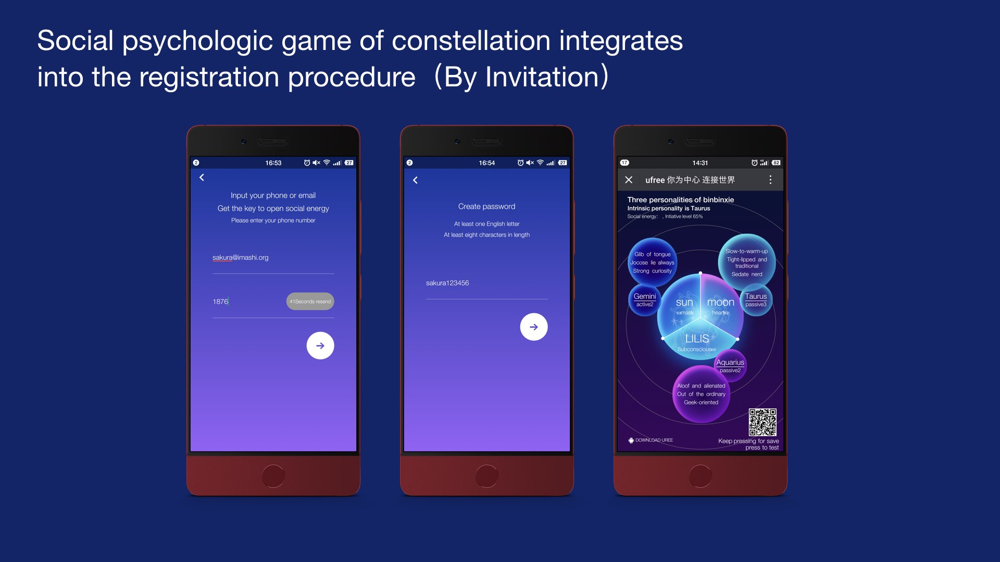
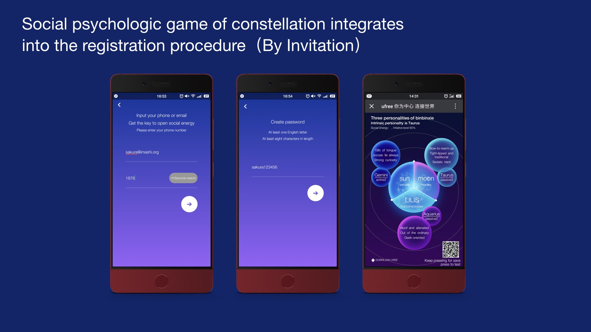
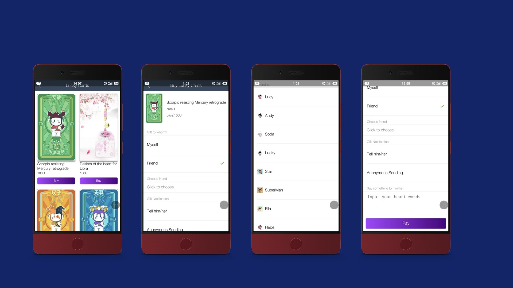
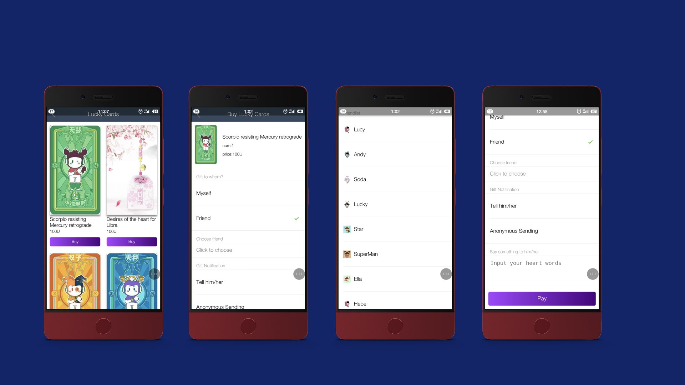

As the first globalized social resources sharing tool with accurate classification of social information, UFREE aims to attract users worldwide by satisfying their common desires of sharing different life and consumption experience.


The acquaintances social links are combined with the expanding stranger social links to be the uniform system. It contains Instant Messaging in friends circle and infinite information resources searching in classified communities. All users can enjoy the customization of social information space.
All posts can be labelled as 10 fields of life and consumption experience of people. We provide efficient category searching strategies for users to realize interests matching, information integration and intelligent cooperation，and facilitate to form valuable blocks according to attention and related interests.

Users have self-determined options to information flow recommendation. They decide their social domain, ways and depth of social behaviors with free will. Junk information could be intercepted by filtering mechanism of platform. All effective behaviors and integrating capacity of users to make value are based on the consensus social credit system of UFREE.
The value and degree of sharing of a single message will be the core indicators of information flow recommendation. Real words of users instead of advertising impact on users' decisions. The consensus social credit system is the foundation for publicly verifying the authenticity of information and resources. The information dissemination and integration paths are traceable and open to be reviewed.
As a user-center social platform，UFREE will never make advertising as the profit model, it will benefit from helping users integrate social information resource and build valuable links to realize intelligent cooperation. UFREE is designed for solving contradiction between making money and keeping interests of users from the angle of business model.

 


 


Double Master degree with sociology and journalism of The Chinese University of Hong Kong. An experienced multi-media practitioner who always deeply concerned about long-term development of society and public affairs. I was awarded 2010 Taiwan Cross-strait Civil Journalism Award for the work as a professional journalist. I had engaged in strategy management for various multi-media platforms, such as Sichuan Daily Press Group and some famous video portals. My first startup was built in 2007, I had ever tried to build a real self-help website and serve for those who had to pay high costs for information gap of the oversea further study and investment. For years, my exploration of how to realize fair sharing of social resources in commercial space with the help of information technology never stopped. UFREE is a certainty, moreover a kind of vocation.
I was graduated from Monash University in Australia with Master of communication and media. I had worked in the field of journalism and public relation for many years. About 5 years ago I worked for Western China Metropolis Daily as a professional journalist. Before joining in UFREE, I took charge of the PR department of Bluegogo, a sharing bike branch under operation of Didi Chuxing. I always expected to usher in the real "era of sharing" with the help of Internet technologies. So when I contacted with the conception of UFREE at first time, I decided to join in and dedicated wholeheartedly to the team.
Master of optical engineering in Sichuan University. I had devoted most of my time into the research of 3D image matching technology before. I excel in using c ++ and openCV to develop camera applications fit for commercial panoramic shooting. Besides, I took part in developing several apps, such as Youyue Home Decoration, Liandong Yunwei and HiBeam by adopting related technologies of Java and Android. I have a firm belief of “Just go to carry out what you believe" ,which accords with the team spirit of UFREE. I will insist on it and see it through.
I had ever engaged in the development of web applications and become technical Co-founder of Xishi Aesthetics Workshop. I independently developed a interesting reading app for the workshop. I am keen on deep learning and independent thinking. I took part in UFREE because of my ideal of realizing fair and transparent information environment in the future. I am determined to make information technology service for ordinary people openly and equally.

An expert in multi-media production. I excel in video producing and the visual special effects. I had made various video works for a number of large enterprises and publicity institutions while worked for a special effects production company. As a profound social observer, I felt idea of UFREE about effective sharing among users is in line with my imagination of the positive information environment, so I chose to join in UFREE without hesitation.

I got bachelor degree of information engineering from Xi Hua University. I have rich experience in application development and rigorous logical thinking ability during my work. I specializes in PHP back-end engineering and excels in database construction, optimization and back-end data cache processing. I am very happy to join the primary development of UFREE because it is really a good chance for me to release my mind from the chaotic internet environment and build some new cognition.

I graduated from Department of Animation of Chengdu University. I had worked for Ubi Soft Chengdu Studio and had nine years of working experience in UI design of mobile apps. I am a Pisces designer and adept in animation and interface creation. Actually I was shocked by subversive idea of UFREE and its founder, I just want to join that amazing intelligent cooperation of UFREE to see what will happen. You know, I always would like to challenge highly difficult missions and implement impossible things.” .
CHENGDI.SICHUAN.CHINA team@ufree.vip

都用到这里
Do you want your online social life to be like this?
No advertising，no leakage and no barrier on social platform. Users are master of big data！ U can grasp various real information resources without deep penetration of commercial capitals. Unity of global users can build valuable connections with each other to realize intelligent cooperation.
 EN
EN